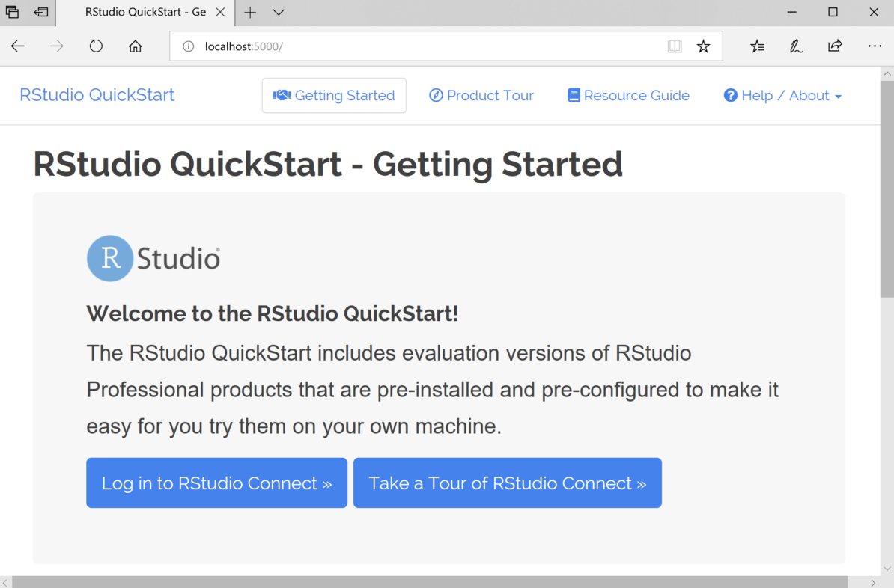

2019-02-13
This blog post is outdated. Please see our product page to learn how to try Posit Connect.
Have you heard of RStudio Connect, but do not know where to start? Maybe you are trying to show your manager how Shiny applications can be deployed in production, or convince a DevOps engineer that R can fit into her existing tooling. Perhaps you want to explore the functionality of RStudio’s Professional products to see if they fit the needs you have in your work.
Today, we are excited to announce the RStudio QuickStart, which allows you to try out RStudio Connect for free from your desktop.

In many organizations, we find that R is already being used internally by individual data scientists and analysts for productive work on their desktops. For other organizations, R has been chosen as a standard for analytics and data science, but a process of exploration is necessary to understand what adoption of open source software looks like in the enterprise.
In all cases, we recommend users showcase our full server-side products to show how R can be useful across a team or department, rather than on a single user’s machine. Furthermore, this process integrates R into an organization’s IT practices and secures it as an analytic standard. The QuickStart is a great first step towards this objective because it is free, easy, and comes pre-populated with some of the most common workflows that we see in enterprise use of our software.
To get started with your 45-day free evaluation, visit the RStudio QuickStart page for instructions. You should download and run the QuickStart and take the product tour. Discuss on RStudio Community or Contact our sales team throughout your exploration if you have difficulties or questions about next steps!
RStudio provides free and open source tools for data science and enterprise-ready professional software for teams to develop and share their work at scale. Now you can try out RStudio professional software on your desktop for free!